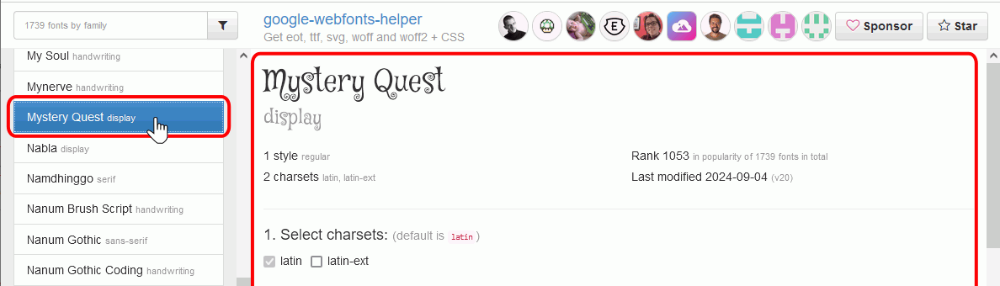
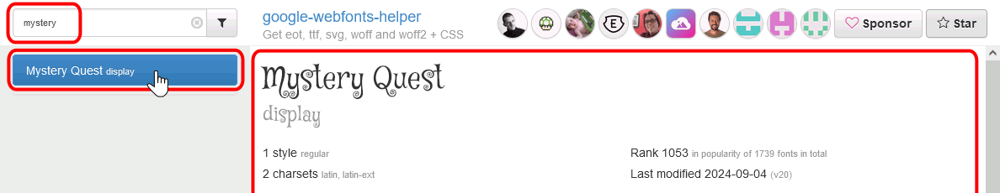
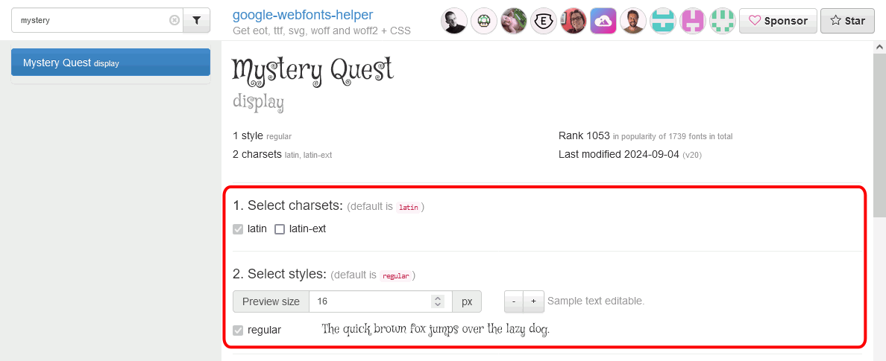
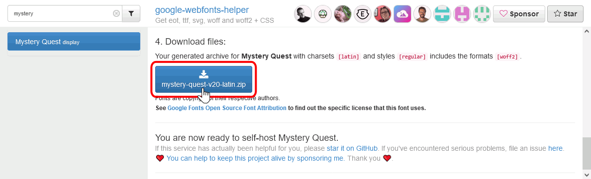

Estas propiedades permiten elegir con todo detalle el tipo de letra que se mostrará en el navegador del usuario.
En esta lección se comentan las propiedades relacionadas con las fuentes web, es decir fuentes que pueden mostrarse en el navegador sin necesidad de estar instaladas en el ordenador ya que se descargan automáticamente.
Fuentes WOFF (Web Open Font Format)
En 2009 se desarrolló un formato de fuentes llamado WOFF (Web Open Font Format) pensado para la web. En realidad no se trata de un nuevo formato, puesto que una fuente WOFF no es más que una fuente TrueType, OpenType, Open Font o SVG comprimida y con metadatos para indicar detalles como el origen de la fuente o la licencia.
En abril de 2010, Mozilla, Microsoft y Opera presentaron este formato al W3C, que aprobó la recomendación WOFF File Format 1.0 en diciembre de 2012.
En marzo de 2018 se aprobó la recomendación WOFF File Format 2.0. Gracias al nuevo algoritmo de compresión Brotli, esta recomendación consigue reducir el tamaño de las fuentes a la cuarta parte, aumentar la velocidad de descompresión y reducir los requisitos de memoria, como se explica en el WOFF 2.0 Evaluation Report publicado por el W3C en marzo de 2016 o en este artículo en lwn.net sobre WOFF2 (13/11/2013).
El formato WOFF 2 es mucho mejor que el formato WOFF 1 y servicios como Google Fonts ya sólo ofrecen WOFF 2.
Para crear fuentes WOFF se puede utilizar webs como Font Squirrel en la que subiendo una fuente TTF u OTF podemos descargar la misma fuente en los formatos WOFF2, WOFF, EOT y SVG.
La regla arroba @font-face
La recomendación CSS Fonts Module Level 3, publicada en septiembre de 2018, permite la utilización de fuentes web mediante el uso de la regla-arroba @font-face, como muestra el ejemplo siguiente:
La propiedad font-family establece cómo tenemos que llamar a la fuente en la hoja de estilo. Si el nombre contiene espacios en blanco, es necesario escribir el nombre entre comillas.
La propiedad src indica el camino (absoluto o relativo) del fichero de la fuente. En el caso de indicar un camino relativo, el camino relativo es el camino relativo de la fuente con respecto a la hoja de estilo, no respecto a la página web.
Una vez definido el nombre de la fuente, se puede hacer referencia a ella en las propiedades font-family.
La recomendación no impone ningún formato específico para los tipos de letra, pero nombra algunos como posibilidad: woff (WOFF Web Open Font Format, .woff), truetype (TrueType, .ttf), opentype (OpenType, .ttf, .otf), embedded-opentype (Embedded OpenType, .eot), svg (SVG Font, .svg, .svgz).
Entre ellos, se recomienda utilizar el formato WOFF 2 (Web Open Font Format, .woff2), definido en la recomendación WOFF File Format 2.0, o en su defecto, el formato WOFF (.woff) definido en la recomendación WOFF File Format 1.0 de diciembre de 2012.
Nota: La regla-arroba @font-face estaba incluida en la recomendación CSS 2, pero no se incluyó en la recomendación CSS 2.1, por lo que en CSS 2 se consideraba obsoleta. Sin embargo, esta regla-arroba se recuperó en la recomendación CSS Fonts Module Level 3, publicado en septiembre de 2018.
Google Fonts / Google Fonts API
Google ofrece un servicio de alojamiento de fuentes libres, Google Fonts.
Google Fonts permite descargar las fuentes en formato TTF a nuestro ordenador para utilizarlas por ejemplo en un procesador de textos. Para ello, hay añadir las fuentes deseadas a una colección y descargar la colección completa.
Lo más interesante de Google Fonts es que las fuentes pueden utilizarse en nuestras páginas web sin necesidad de alojarlas en nuestro propio servidor. Eso tiene la ventaja de que nos ahorramos el tráfico que genera la fuente, pero tiene el inconveniente de que en algún momento pueden no estar disponibles. Para reducir este problema conviene indicar varias fuentes, como mínimo poniendo en último lugar una de las familias genéricas.
En enero de 2022 un tribunal alemán sentenció que el servicio de Google Fonts no cumple el Reglamento UE 2016/679, conocido como RGPD, Reglamento General de Protección de Datos, ya que el servicio permite a Google conocer la IP del cliente cuando este visita una página que enlaza a Google Fonts. Por tanto, las páginas alojadas en la Unión Europea no deben utilizar el servicio de Google Fonts. Una solución es utilizar servicios alternativos que sí cumplan la RGPD, que suelen ser de pago, por lo que la mejor solución es alojar las fuentes en nuestro propio servidor. [referencia: Noticia en TheRegister enero 2022]
Para encontrar una fuente puede ordenarlas por orden alfabético. Una vez encontrada la fuente, seleccione la fuente haciendo clic en el cuadro de la fuente:
Si conoce parte del nombre de la fuente, puede escribirlo en el cuadro de búsqueda. A continuación, haga clic en el cuadro de la fuente:
Se abrirá la ficha de la fuente que lógicamente muestra su nombre. El nombre también puede leerse en la URL de la página:
Una vez se conoce el nombre de la fuente, la documentación oficial propone dos maneras equivalentes de utilizar la fuente de Google Fonts, aunque yo recomiendo la primera ya que toda la información se encuentra en la hoja de estilo. En ambos casos, la referencia a la fuente es su nombre, sustituyendo los espacios por el caracter + (suma). Por ejemplo, para utilizar la fuente Mystery Quest habría que escribir Mystery+Quest.
Incluir al principio de la hoja de estilo una regla-arroba @import y la fuente se puede utilizar en la hoja de estilo como una familia más, como muestra el ejemplo siguiente:
Las reglas @import deben escribirse obligatoriamente al principio de la hoja de estilo, como se comenta en el apartado Posición de @import de esta lección.
Incluir en el documento html un enlace como si fuera un enlace a una hoja de estilo. La fuente se puede utilizar en la hoja de estilo como una familia más, como muestra el ejemplo siguiente:
p {
font-family: "Mystery Quest", cursive;
font-size: 150%;
}
Nota:
Por motivos de seguridad, Google Chrome y Firefox (a partir de la versión 26), obligan a que el contenido mixto activo se obtenga mediante https en vez de por http (explicación en Mozilla Developer Network, Content Security Policy (CSP) [MDN]). Es decir, que si una página que se sirve por https (conexión segura) incluye elementos enlazados por http (conexión insegura), estos elementos no se descargarán.
Se recomienda por tanto que el enlace a Google Fonts se haga mediante https en vez de http, por si en el futuro nuestra página, que enlaza a Google Fonts, se sirve mediante https.
Descargar las fuentes de Google Fonts en formato WOFF2
Cuando se descarga una fuente de Google Fonts, tan sólo se incluye la fuente en formato TTF. Para obtenerla en formato WOFF2 puede seguir estos pasos:
En la ficha de la fuente que quiera descargar, haga clic en el botón "Get font":
Una vez seleccionada, haga clic en el botón "Get embed code":
En la pestaña Web, opción <link> o @import, seleccione y copie la dirección web https://fonts.googleapis.com/css2?family=...:
Pegue esa dirección en la barra de dirección del navegador y pulse Intro. Se mostrará un documento de texto en el que se puede encontrar la dirección web de un archivo woff2. Puede haber varias versiones de la misma fuente (en la captura el documento contiene dos enlaces a diferentes versiones de la fuente). Normalmente, la versión a descargar es la versión latin, pero si esa versión no contiene todos los caracteres necesarios (acentos, etc.), a veces es necesario descargar la versión latin-extended u otras. Copie la dirección web de la versión elegida.
Pegue esa dirección en la barra de dirección del navegador y pulse Intro. Automáticamente, el navegador guardará el fichero de la fuente o le dará la opción de guardarlo.
En la carpeta de descargas se mostrará el archivo woff2 descargado:
Puede cambiar el nombre del fichero al nombre de la fuente (manteniendo la extensión woff2) para facilitar su uso posterior:
Descargar las fuentes de Google Fonts en formato WOFF2 desde google-webfonts-helper
Desde google-webfonts-helper se pueden descargar las fuentes de Google Fonts en formato WOFF2:
Las fuentes se muestran en orden alfabético. Una vez encontrada la fuente, seleccione la fuente haciendo clic en el botón correspondiente:

Si conoce el nombre o parte de él, también puede utilizar el cuadro de búsqueda:

Puede seleccionar el juego de caracteres o los estilos disponibles para esa fuente en concreto:

En la parte inferior de la página se encuentra el enlace de descarga:

El fichero zip descargado contiene la fuente en formato WOFF2.
Posición de @import en la hoja de estilo
La regla @import debe escribirse al principio de la hoja de estilo, sin otras reglas delante, ni siquiera reglas @font-face, como muestran los siguientes ejemplos: